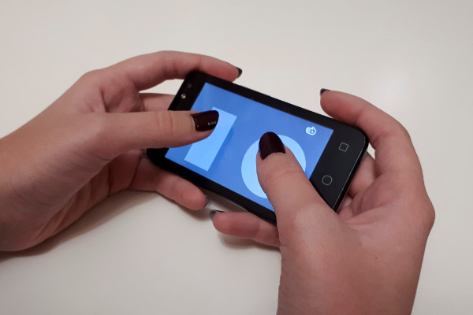
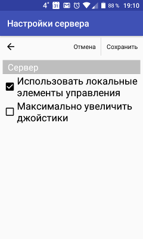
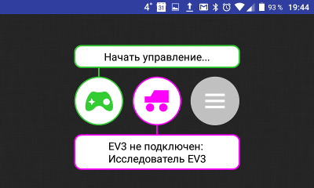
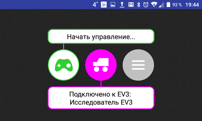
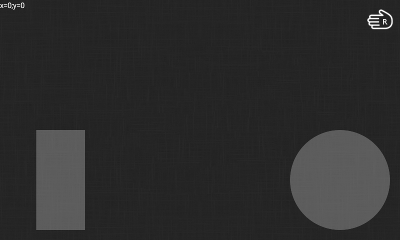
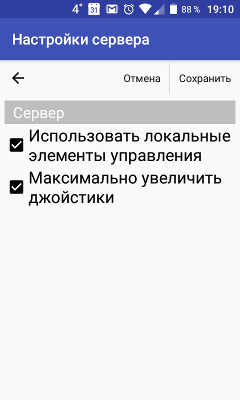
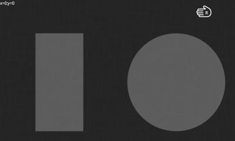

Version 1.4.2 · translated article
Turning a smartphone into a robot remote control with RoboCam
The screenshots are from the original article and show the app's Russian interface; the text describes each screen in English.
In all the earlier articles about the RoboCam app I described how to use it to control a robot in first person. But sometimes first-person control isn't needed — you only want to turn the smartphone into a remote control. The latest version of RoboCam adds exactly that.

This article describes the new features in RoboCam version 1.4.2. All the articles about RoboCam can be found here. You can install RoboCam from Google Play, or from the APKPure mirror if you want an APK to install manually.
Everything from the previous versions of the app is unchanged. Version 1.4.2 only adds local controls. They are off by default and everything works as before. To turn local controls on, open the server settings and tick «Use local controls». All the other server settings then disappear. Press the «Save» button. If you don't know where to find the server settings, read the first article about RoboCam first.

Then go back to the main screen and you will see that the left green button has changed. It now shows a joystick. You will also see that the camera is now off.

Press the middle purple button to connect to the robot. How to connect to a robot and configure it is described in detail in the first article about RoboCam. Then press the left green button to open the screen with the local controls, i.e. the joysticks.

As you can see, the joysticks look the same as in the browser when you control the robot in first person with RoboCam.

But small joysticks are awkward to use on a phone with a small screen, so go back to the server settings, tick «Maximise joysticks» and press the «Save» button.

Now, when you open the screen with the local controls, you will see that the joysticks have become larger.

By the way, if you connect a keyboard to the smartphone you can control the robot from it. However, for the keyboard to work the RoboCam app must be active and the phone must be unlocked. Read more about keyboard control in the third article about RoboCam.
All RoboCam versions
- v1.4.2 Turning a smartphone into a robot remote control with RoboCamyou are here
- v1.3.1 Building first-person control for an Arduino robot
- v1.2 RoboCam – controlling a robot in first person from a computer keyboard
- v1.1 Importing, exporting, copying and sending robot settings in RoboCam
- v1.0 Controlling a LEGO Mindstorms EV3 robot in first person